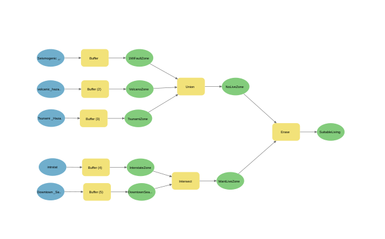
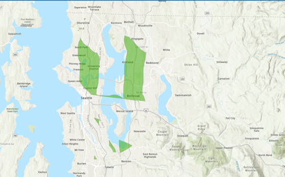

GIS Coursework / Week 07
Suitability Modeling



Overview
Built a geoprocessing model in ModelBuilder to automate the Week 6 fault analysis, then used a similar approach for a vector suitability analysis identifying livable areas in Seattle based on a client’s preferences.
Process
Chained tools like Buffer, Union, and Erase into a reusable model rather than running each step manually.